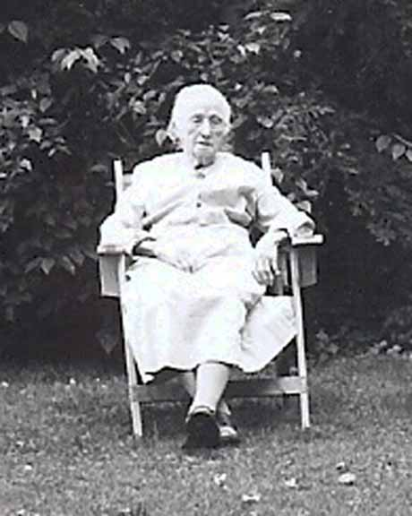
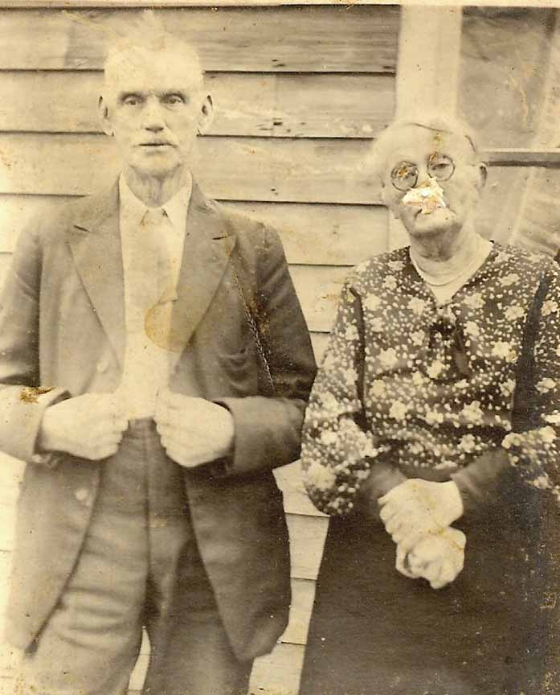
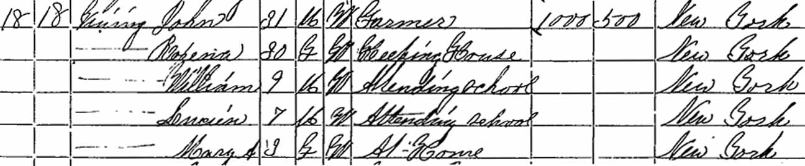
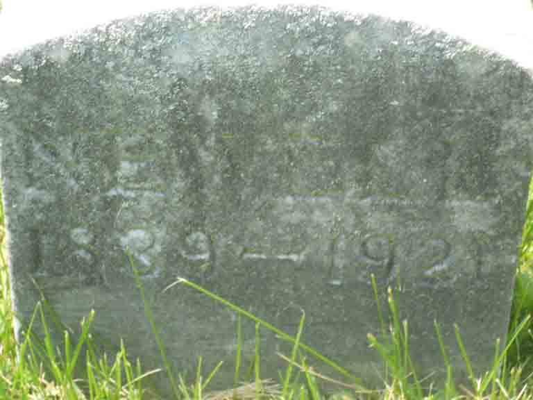

Family Data
Minnie May Vining (daughter of John Newell Vining and Roxanna Tripp), and Minnie May with husband Cicero Finch. [Photos courtesy of Carolyn Sick]

Census Data
| 1870 | 1880 | 1890 | 1900 | 1910 | 1920 | |
| John Newell Vining | 31 | ? | ? | ? | ? | ? |
| Roxanna (Tripp) Vining | 31 | ? | ? | ? | ? | ? |
| William Albert Vining | 9 | ? | ? | ? | ? | ? |
| Lucien Freeman Vining | 7 | ? | ? | ? | ? | ? |
| Minnie May Vining | 3 | ? | ? | ? | ? | ? |

Death Data
Gravestone for John Newell Vining, in Conklin Cemetery, Conklin, Broome County, New York (from Find A Grave):